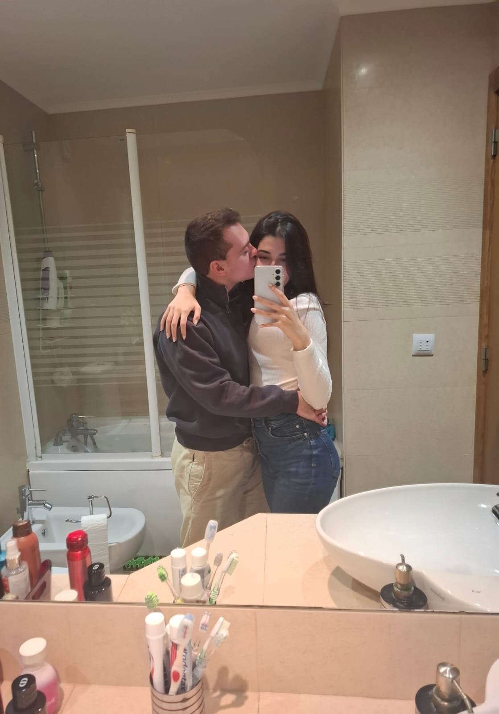

Capitulo I.
Love History
O amor tem muitas formas, muitos tempos, muitas maneiras de se manifestar.
Às vezes, chega de mansinho, outras vezes avassala-nos sem nos avisar.
Há amores que ensinam, outros que nos desafiam, e há aqueles raros que simplesmente nos completam.
Há sentimentos que são difíceis de explicar, pois não seguem a lógica nem a razão, apenas acontecem.
Como um encontro marcado pelo acaso, como um olhar que se reconhece sem precisar de palavras,como algo
que já fazia parte de nós antes mesmo de existir.
E há pessoas que nos desmontam por completo. Que chegam sem que esperássemos, mas que, de repente, fazem todo o sentido.
Pessoas que trazem o caos e a calma ao mesmo tempo, que são a tempestade e o abrigo, a dúvida e a certeza.
São o imprevisto que se torna indispensável, a peça que faltava sem que soubéssemos.
Por isso, há algo que preciso dizer:
Tu és fascinante de uma maneira que me confunde, mas é exatamente essa confusão que o torna irresistível.
É o caos e a serenidade a coexistirem, o carinho entrelaçado com a bravura, a desordem que dança em harmonia.
És um paradoxo encantador, e talvez seja isso que sejas tão única.
Dizem que, na vida, temos três grandes amores.
O primeiro chega na adolescência, carregado de sonhos e promessas.
Faz com que tudo pareça um enredo de um filme, onde cada olhar roubado e cada toque suave são cenas de uma história perfeita.
É o amor que nos ensina a amar.
O segundo amor surge como um furacão. Ensina-nos a dor, prende-nos numa teia da qual hesitamos em sair.
Queremos que dure para sempre, mesmo sabendo que não é para nós.
Mas tem o seu propósito: amadurecer-nos, preparar-nos.
E então, há o terceiro amor. O mais bonito. O inesperado.
Surge sem aviso, sem promessas ou expectativas.
Simplesmente acontece.
E, quando nos damos conta, já estamos completamente envolvidos.
Ele não precisa de esforços para dar certo, porque é leve, é cura, é verdadeiro.
Foi assim contigo.
Eu percebi que era amor quando chego a casa depois de um dia cansativo e, em vez de apenas querer descanso, desejei ter-te ao meu lado.
Quando deito a cabeça na almofada, não penso no peso do dia, mas em como seria bom envelhecer contigo, dividir a vida e
todos os momentos, bons ou difíceis, ao teu lado.
E esse amor não se limita ao dia ou à noite, sonho contigo mesmo quando estou acordado, pois não
suporto a ideia de te ver partir da minha vida, lembro-me do teu rosto, do teu sorriso e da tua voz, como um
flashback do melhor dia da minha vida.
É por isso que, mesmo que a vida me desse mil oportunidades de recomeçar, eu jamais encontraria noutro olhar o que vejo no teu.
Prefiro consertar, cuidar, tentar quantas vezes for preciso, porque o meu coração já te escolheu.
É incrível pensar que o nosso encontro foi uma obra do acaso, um daqueles acasos que mudam vidas.
Mas agora sei que não foi apenas sorte, foi destino. Porque tu és a peça mais importante do meu puzzle, o pedaço do
meu coração que eu nem sabia que me faltava.
O que sinto por ti é como o mar. E tu perguntas: como assim, o mar?
Um mar que é intenso, mas não é só isso que o torna especial.
É profundo, misterioso, cheio de segredos que ninguém consegue desvendar.
Assim é o que sinto por ti. É como o mar, porque em mim existe essa imensidão de
sentimentos que não sei explicar. Sei que é fundo, sei que é bonito, mas não sei descrever.
É um oceano sem fim, mas eu só sei que sinto.
Nos teus olhos, encontrei a paz que tanto procurei, aquele refúgio silencioso onde tudo faz sentido.
São esses mesmos olhos que brilham quando sorris, tornando-se pequeninos e ainda mais bonitos, como se cada sorriso
teu iluminasse um pouco mais o mundo ao meu redor.
Por isso, espero que da tua boca nunca saia um "nunca me amaram", pois se o amor tivesse forma física, eu
teria arrancado o coração só para o entregá-lo a ti. Cada segundo ao teu lado é precioso, e mesmo que esteja contigo, nunca
parece ser o suficiente para matar toda a saudade que sinto de quando estás longe.
Ainda que chova, ainda que doa, ainda que a distância roube as horas do dia e a noite caia sem estrelas, há
algo que permanece imutável: o brilho do teu sorriso. E cada vez que sorris, o mundo brilha um pouco mais.
E é nesse brilho, nessa luz que me aquece e me envolve, que entendo o que é verdadeiramente viver.
Porque amar-te é como respirar: natural, essencial, vital. És o que me dá vida.
